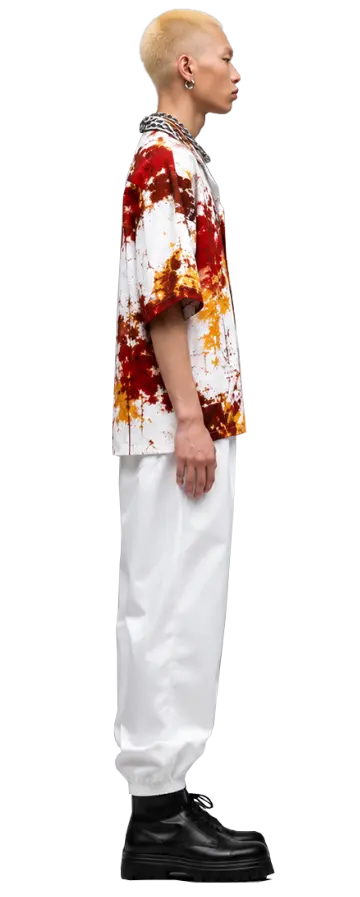
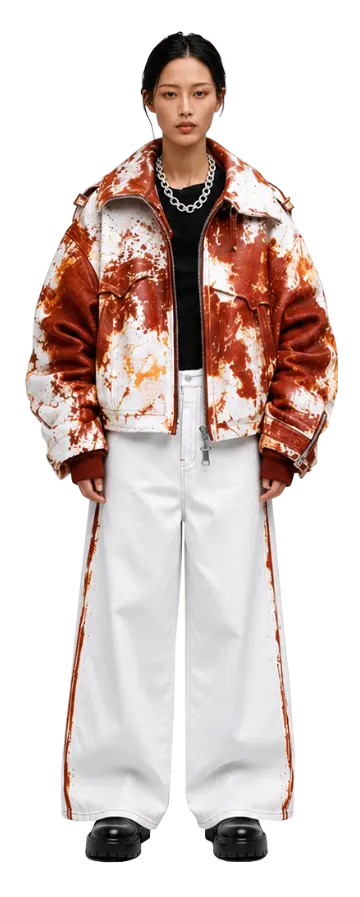
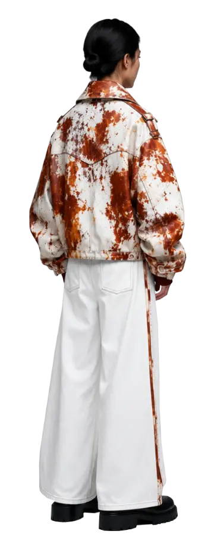

AI Brand „nandenmoii“
Konzeption und visuelle Entwicklung einer KI-basierten Fashion-Brand-Identität sowie multimedialer Kampagnen-Assets



avatar consistency
- Model: Jason
- Größe: 184cm
- Brust: 91cm
- Taille: 73cm
- Hüfte: 91cm
ComfyUI virtual try on
Textplatzhalter: Hier folgt die Beschreibung des ComfyUI-Workflows für die virtuelle Anprobe.


selected works
Videos aus allen Projekten – generiert mit Midjourney, RunwayML, Seedance, Suno und ComfyUI. Ist ein Clip zu Ende, blendet der Slot auf Schwarz und startet den nächsten. Alles folgt dem Scrollen.